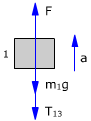
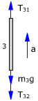
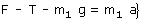
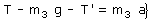
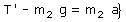
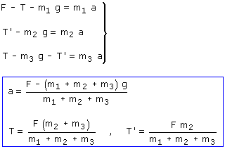

Cuando la cuerda tiene masa las tensiones en sus extremos son forzosamente distintas. Observa en el diagrama que si fueran iguales las tensiones T31, T32 resultaría que la cuerda tiene fuerza hacia abajo (Su peso) y aceleración hacia arriba
Ecuaciones de la Dinámica para bloques y cuerda:
|  |
 |
|
 |
 |
 |

Las fuerzas T13, T31 (Tensión)
tienen el mismo módulo: T (Acción y reacción) |
Combinando las ecuaciones obtenidas resulta un sistema de incógnitas: a, T, T'

Observa que si la masa de la cuerda fuera cero las tensiones en ambos extremos serían iguales